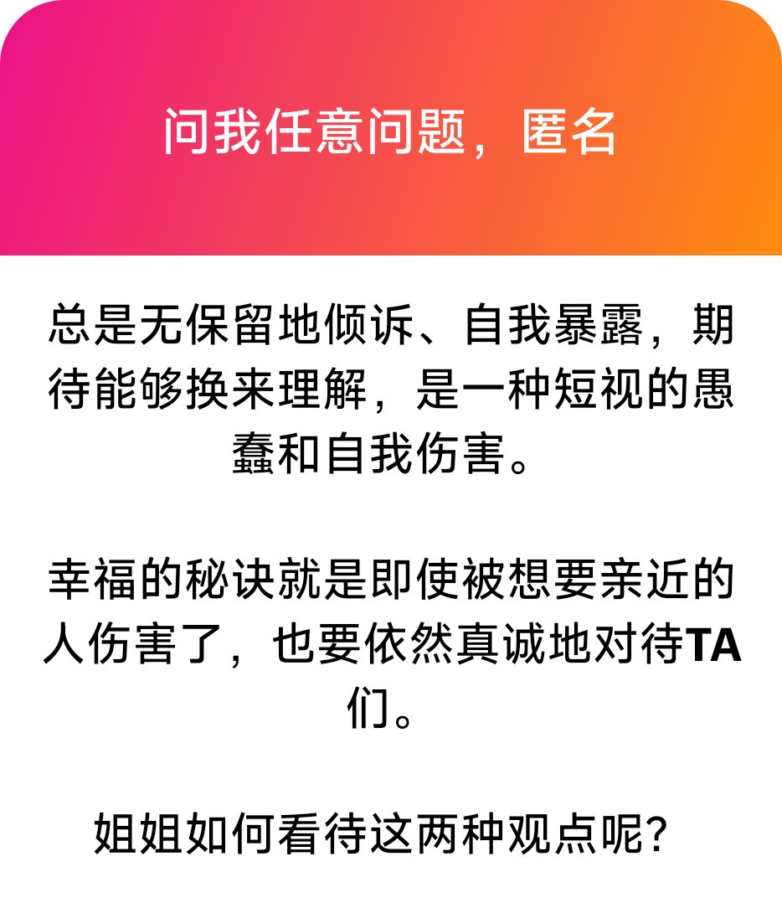

洛书瑶
@luoshuyao
1、我觉得有一定的道理。没有人有义务去接受你的倾诉，也不是所有人都能理解你的痛苦和情绪，也不是所有人会对此保持善意。当期望落空或是被不怀好意的人攻击，就会伤害到自己。这样的事情需要选人去做，有一个真正愿意去了解你，理解你的人，不管是朋友还是恋人，这个人会是你相伴一生的知己，对其他人毫无保留地倾诉都只会是一种伤害。
2、不是很赞同。不过具体是看什么样的伤害，如果是无意的，那还好说，如果是故意的或是反复伤害，这时候的真诚不过是自我感动而已。真正在乎你的人不会这样做的，这样的真诚谈何幸福。
